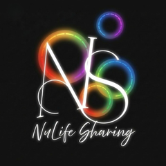
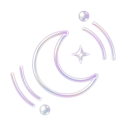
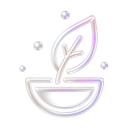
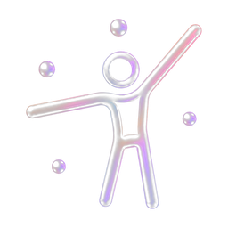
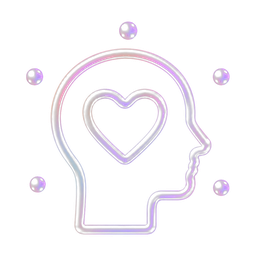
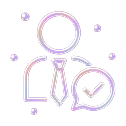
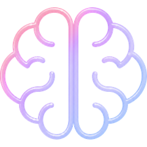
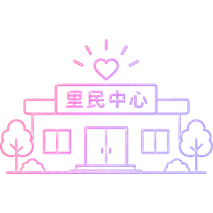
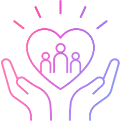
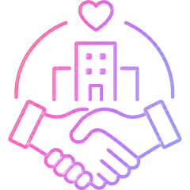

經絡推拿
陳進發 老師
徒手調理，疏通氣血、放鬆緊繃，幫助身體恢復循環。
經絡推拿教育學會理事長 · 體育運動碩士 · 教育部講師 · 近 40 年推拿實務與教學
看完整資歷 →

抗老研究室ANTI-AGING LAB科學 × 光譜 × 恢復力設計
RECOVERY IS THE NEW ANTI-AGING
很多人不是生病之後才開始不健康，而是在真正生病之前，就已經長期處於亞健康狀態。真正缺少的，不是更多資訊，而是一個能整合資訊、理解身體、找到方向並陪伴落實的平台。
睡不好、容易疲勞、壓力過大、恢復變慢、免疫下降——這些都是身體持續發出的訊號。市面上資訊太多、方向太少，其實，健康沒有標準答案。問題，常出在三個地方：
這正是抗老研究室想解決的事。
在疾病發生之前，看見健康、理解健康、建立健康。
透過 PrysmiO 等工具，讓恢復力被量化。
AI 健康解碼，找出影響恢復力的關鍵。
顧問整合資源，提供適合你的方案。
持續陪伴，讓恢復力成為生活方式。
恢復力，比年齡更能說明你的身體狀態。
修復能力
發炎與恢復
彈性與老化
代謝與體能
壓力與平衡
我們整合不同健康專業，從睡眠、營養、運動到情緒與免疫，共同協助你提升恢復力。

深層睡眠與身體修復

從飲食打底恢復力

強化身體能量與活力

平衡身心的恢復節奏
鞏固身體的防線

跨領域整合與陪伴
我們是誰？我們相信什麼？為什麼成立？
我們發現，很多人不是生病之後才開始不健康，而是在真正生病之前，就已經長期處於亞健康狀態。睡不好、容易疲勞、壓力過大、恢復變慢、免疫下降……這些都是身體持續發出的訊號。
現代人的健康資訊越來越多，每一種都有價值，卻也讓人更加困惑。真正缺少的，不是更多資訊，而是一個能整合資訊、理解身體、找到方向、並陪伴落實的平台。因此，抗老研究室誕生了。

打造值得信賴的健康導航平台。透過科技、數據、AI 分析與跨領域專業陪伴，協助更多人在疾病發生之前，看見健康、理解健康、建立健康。

讓恢復力，成為一種生活方式。串聯更多專業顧問與健康資源，共同打造亞洲最值得信賴的恢復力平台。
我們不是與時間對抗，
而是與身體合作。

先理解身體，再談改善。

相信數據，但不迷信數據。
讓科技放大人的專業判斷。

讓修復成為每天的日常。
 科學相信數據，但不迷信數據。整合整合跨領域資源，而非單一答案。陪伴長期建立新的生活方式。
科學相信數據，但不迷信數據。整合整合跨領域資源，而非單一答案。陪伴長期建立新的生活方式。 希望每個人都擁有恢復的能力。
希望每個人都擁有恢復的能力。健康，不是與時間競賽，而是理解自己的身體、尊重身體、陪伴身體。恢復力，不只是修復身體，也是重新找回生活的平衡。讓生命不只是變老，而是持續綻放。
什麼是恢復力？為什麼恢復力比年齡更重要？
真正的抗老，不是追求永遠年輕，而是讓身體擁有持續恢復的能力。當恢復力提升，生活就有更多能量、工作更有效率、家庭更有陪伴、人生也更有餘裕。
年齡只是數字，恢復力才真正反映身體當下的狀態。這也是抗老研究室關注的核心。
這五大面向，正是 PrysmiO 檢測一次量測、為你逐項解讀的健康系統。

深層睡眠、睡眠品質與修復能力。

免疫防禦、發炎反應與恢復力。

保濕度、彈性與肌膚老化指數。

代謝效率、脂肪管理與體能狀態。

壓力指數、情緒平衡與自律神經。
恢復力不是一次性的改變，而是融入每天的生活：規律的睡眠、合適的營養、適度的活動、放鬆的身心，以及一個支持身體的環境。
我們如何幫助你？從 15 秒看見健康，到 AI 解碼出專屬你的恢復方向——分層、一氣呵成。
不是保健食品品牌，不是診所，不是健身房，也不是單一健康課程。我們整合健康科技、AI 分析、跨領域專業與生活方案，協助每個人找到真正適合自己的健康方式。
只要把手指放上 PrysmiO，15 秒就能透過高光譜檢測，把你的健康量化成「健康光譜指數」，並在 App 上即時看見結果。
五個階段，把「健康」變成你做得到的生活方式。
採用高光譜檢測技術，只要 15 秒，將健康量化為 100～1000 的「健康光譜指數」，並解讀睡眠、免疫、肌膚、體態、情緒五大面向。
選一個你最想先改善的面向，AI 分析你的生活型態，產出專屬健康報告與個人化改善方向。
由恢復力管理顧問整合恢復力生態系的健康資源，為你搭配真正適合的方案，而非單一答案。
透過持續陪伴與生活實踐，協助你把方案落實在每天的生活裡。
讓恢復力成為每天的生活方式，而不只是短期的努力。
PrysmiO 一次量測，五個面向同時被看見。（以下為示意分數）

深層睡眠、睡眠品質與修復能力

免疫防禦、發炎反應與恢復力

保濕度、彈性與肌膚老化指數

代謝效率、脂肪管理與體能狀態

壓力指數、情緒平衡與自律神經
由史丹佛大學、上海交通大學實驗支持。

多位醫師與專業人士共同推薦。

於全台 30+ 里民與社福單位實地服務。
看看醫師與媒體，怎麼看待 PrysmiO 檢測。
整合多元專業介入方式，陪你走在健康恢復的每一步。我們相信，健康不是單一解方，而是多個面向相互影響、彼此支持的系統——透過 AI 科技、專業檢測與跨領域資源整合，協助你找到最需要改善的方向，啟動全面恢復力。
了解身體狀態與生活習慣。
精準量化你的恢復力狀態。
找出目前最值得改善的關鍵環節。
串聯最適合你的專業資源，打造專屬恢復方案。
恢復力不是單一指標，而是六個彼此影響的面向。我們從每一個面向，整合對應的專業介入方式。
提升細胞防禦力，打好健康的基礎。
降低慢性發炎，維持內在平衡。
穩定神經與壓力反應，提升睡眠與情緒狀態。
促進能量代謝與血液循環，維持身體運作效率。
強化身體功能與行動能力。
建立良好習慣與環境，讓健康能持續被照顧。


我們相信，每個人的健康需求都不同。抗老研究室串聯營養、運動、睡眠、心理、醫療等不同專業領域，依據 AI 健康解碼與恢復力分析結果，協助媒合適合的合作夥伴，打造更完整的健康支持系統。
抗老研究室為健康教育與恢復力整合平台，並非醫療院所。本頁所列為合作專業領域，將依個人需求協助媒合適合的合作夥伴，實際服務由各合作專業人員提供。
每一位專家，都是你健康恢復力的重要推手。我們整合專業力量，為你打造最適合的恢復方案。

每一份恢復力計畫，都從一位恢復力顧問開始。他們會理解你的狀況，陪伴你建立健康習慣，並在需要時，串聯最適合的專業顧問。
不是醫師，也不是營養師，而是最了解你的人。陪伴你每一步，讓改變更簡單、持續、有效。
15 秒檢測，量化恢復力指數。
深入了解你的身體與生活狀況。
依據數據與需求，制定策略。
定期關心與調整，陪你走得更遠。
需要時，為你找到最適合的專家。
恢復力顧問會根據你的需求，為你媒合最合適的專業顧問團隊，提供更完整的支持。
各領域專家，專業分工，協力守護你的健康。（以下為團隊藍圖，將逐步到位）
徒手調理，疏通氣血、放鬆緊繃，幫助身體恢復循環。
身心放鬆，引導呼吸與動作，調節自律神經與情緒。
醫療評估與診斷，提供專業醫療建議與健康風險管理。
飲食營養規劃，制定個人化飲食與營養策略。
運動與身體機能，設計運動計畫、提升體能與功能。
情緒與心理支持，協助壓力調適、建立心理韌性。
中醫調理與體質，調理體質平衡、改善不適症狀。
睡眠品質優化，改善睡眠問題、提升恢復力。
我們與全台社區、企業、機構合作，將健康管理帶進生活的每個角落。（此為發展目標）
破除保健迷思，用科學理解身體。
4 堂課帶你看懂自由基、氧化壓力與抗老防禦。
把抗老落實在每一天的九個關鍵習慣。
釐清順序、挑對產品、養對肌膚。
這不是產品見證，而是真實人生。
從睡眠開始，一位母親如何重建生活節奏。
高壓工作下，重新理解身體訊號的故事。
恢復力，讓晚年生活更有餘裕。
健康，成為全家共同的生活方式。
社區一起建立恢復力的溫暖故事。
企業如何把恢復力帶進職場。
從社區到企業，一起把恢復力帶進生活。

走進社區，讓恢復力從日常開始。

讓更多人有機會理解自己的身體。

把健康導航帶進職場與團隊。
用科學與陪伴，破除保健迷思。
串聯全台的恢復力資源據點。
打造亞洲最值得信賴的恢復力平台。
每一場走進社區的檢測與講座，都是恢復力的累積。（持續紀錄中，每季更新）
走進社區，為里民進行 PrysmiO 恢復力檢測與解讀。
把健康導航帶進職場，協助團隊看見自己的恢復力狀態。
用科學與陪伴，和居民一起破除常見的保健迷思。
我們實際走進的社區、里辦、機構與活動現場——這些不一定是固定據點，但都留下了恢復力檢測的足跡。（持續累積中）
不論你是想改善健康的人、想合作的專家，或想照顧團隊的企業——這裡都有一條為你而開的路徑。
想先了解整個流程？先看看 AI 健康解碼 如何運作。